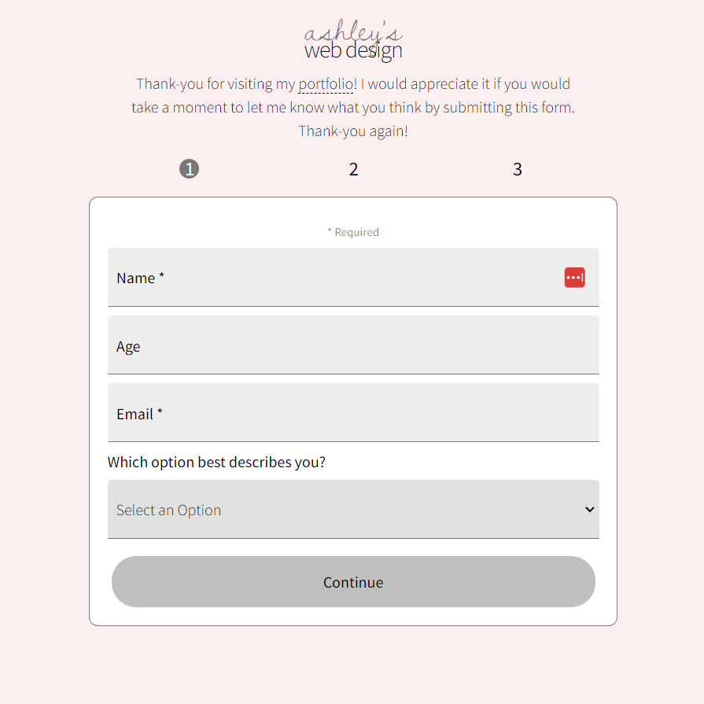
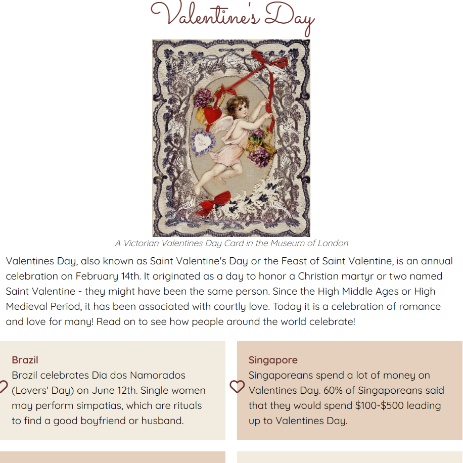
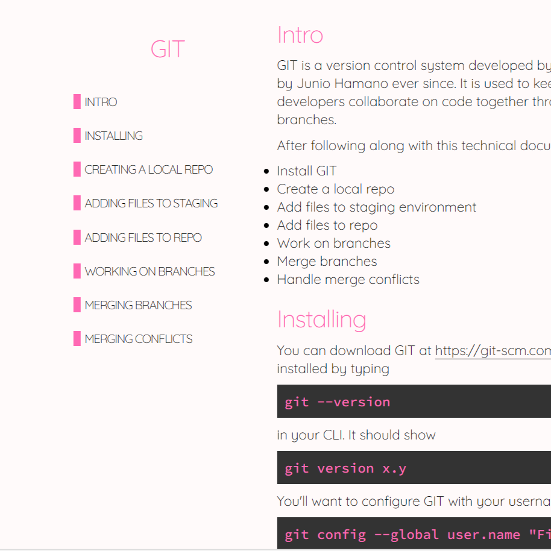

Hello
I'm Ashley Miller
Web Designer & Front End Developer 👩💻 | Boy Mom 👨👩👦👦
Welcome to my cozy corner of the web where I share my love of design and code. I'm currently earning my Responsive Web Design Certification from freeCodeCamp. You can peek at my projects in my portfolio. I'm also doing the 100 Days of Code Challenge. You can follow my journey on X.

Featured Projects

Survey Form
for freeCodeCamp's Responsive Web Design Certification
Developed with HTML, CSS, and JS, it features floating labels for the inputs and multiple steps.
Visit
Tribute Page
for freeCodeCamp's Responsive Web Design Certification
Developed with HTML, and CSS, it features a bulleted list with a custom bullet.
Visit
Technical Documentation Page
for freeCodeCamp's Responsive Web Design Certification
Developed with HTML, and CSS, it features a basic reference to GIT and a hover effect on the navigation links.
Visit